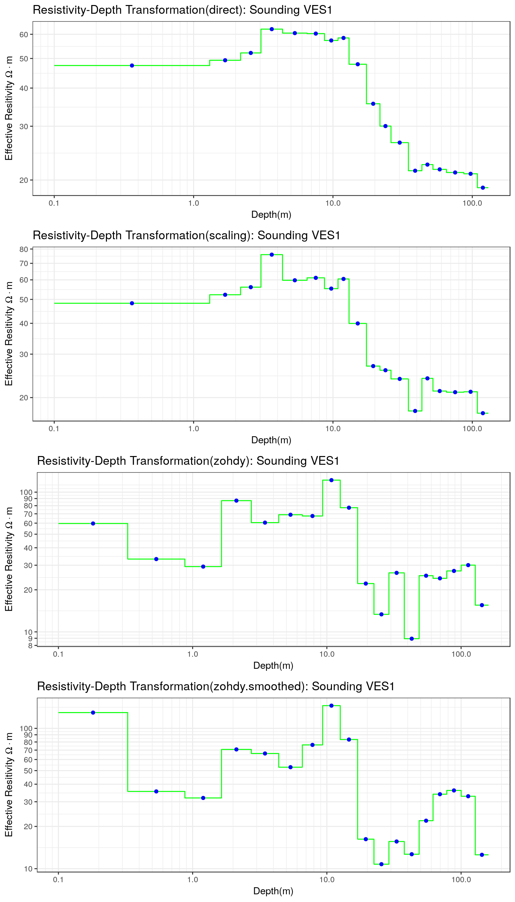

Vertical Electrical Sounding (VES) is one of the oldest resistivity methods and its the main geophysical method used in groundwater exploration due to its cost and investigation depth. In a VES, measurements of apparent resistivity are taked for different values of node spacing. These measurements are used to define a simplified subsurface representation composed of true layer resistivities and thicknesses in a process that is generically called inversion. The modern inversion procedures are based on nonlinear least-squares or global optimization methodologies which in general require an intermediate technical knowledge from the user to be applied in a proper way. However, in some cases the user requires a simple and fast procedure to estimate the true layer resistivities and thicknesses without using these advanced optimization approaches. In these cases the resistivity-depth transformations become an alternative to define the layered model, and they can be used as a first approximation to the real layered model or as an initial model to more common and versatile optimization procedures.
The rves package includes four resistivity-depth transformations:
These methods are explained in the following sections.
In the direct method proposed by Meju (1995), the electrode spacings \(x\) are transformed to depths \(d\) according to the following equation:
\[ d(x) = \frac{x}{2.3} \] whereas the true resistivity can be assumed equal to the apparent resistivity: \[ \rho_{\text{eff}}(d)=\rho_{app}[d(x)] \] or the true resistivity can be approximated using the following equation: \[ \rho_{\text{eff}}(d)=k \rho_{\text{app}}[d(x)]\exp{[-(1-\alpha)]} \] where the exponent \(\alpha\) is equal to \(0\) for synthetic data and is between \(0.15-0.20\) for field data, and the constant \(k\) is assigned a value of \(2.3\).
This is another simple and fast method to transform the apparent resistivity data proposed by Meju (1995) and it is based on successive approximations of true resistivity data using a scaling rule defined by: \[ \rho_{\text{eff}}(d_{i})=\rho_{\text{app}}(d_{i}) \times S \] where \(\rho_{\text{app}}\) is the apparent resistivity and the scaling factor \(S\) is defined as: \[ S=\frac{\rho_{\text{app}}(d_{i})}{\rho_{\text{app}}(d_{i-1})} \] The measurement depths \(d_{i}\) are defined in the usual way as:
\[ d_{i}=\frac{x_{i}}{2.3} \] This approach is applied assuming that the first value of the apparent resistivity is the true resistivity of the first layer.
This is an iterative and fast method to obtain the resistivity distribution in function of the depth that was originally proposed by Zohdy (1989). This methodology is automatic and does not require the specification of an initial model and the numbers of the final model is equal to the number of resistivity measurements. This approach can be classified as a geometrical method where the apparent resistivities are corrected to define the true resistivities. In the original reference Zohdy points out that the sounding curve is always shifted to the left when compared to the true resistivity curve. Therefore it is assumed that the real resistivity curve can be obtained from the sounding curve by shifting the latter by a specific amount. In addition the amplitude of the sounding curve is always less than the corresponding amplitude of the true resistivity curve and therefore it defines a constraint on minimunm change that a true resistivity curve can have. This approach is defined from this geometrical relationships betweeen the sounding curve and the true resistivity curve. The transformation is applied in two steps:
The amount of shift to be applied to the sounding curve to define the true resistivity curve is the based on the following iterative procedure:
\[ \rho_{i}^{(j+1)}=\rho_{i}^{(j)} \times \frac{\bar{\rho_{0}}(i)}{\bar{\rho_{cj}}(i)} \] where:
The main problem with the use of the Zohdy’s method is its sensitivity with respect to the presence of noise in the apparent resistivity measurements which makes instable the original method. To solve this problem Loke and Barker (1995) proposed a smoothing procedure based on using the logs of the apparent resistivity data instead of the original measurements and the resistivity correction is defined using a weighted average of the resistivity differences.
This method is based on the original definition proposed by (Zohdy 1989) expressed in terms of the logarithms of the apparent resistivity measurements:
\[ \begin{aligned} \rho_{i}^{(j+1)}&=\rho_{i}^{(j)} \times \exp{\left(c_{i}^{(j)}\right)}\\ &=\rho_{i}^{(j)} \times \left( \frac{\rho_{0}^{(j)}}{\rho_{ci}^{(j)}} \right) \end{aligned} \] where the scaling factor of the i-th measurements at the j-th iteration \(c_{i}^{(j)}\) is defined as:
\[ c_{i}^{(j)}=\log{\left[\rho_{i+1}^{(j)}\right]}-\log{\left[\rho_{i}^{(j)}\right]} \] The smoothed version of the Zohdy’s method proposed by Loke and Barker (1995) is based on the use of a modified scaling factor \(c_{i}^{(j),*}\) \[ \rho_{i}^{(j+1)}=\rho_{i}^{(j)} \times \exp{\left(c_{i}^{(j),*}\right)} \] that is defined as: \[ c_{i}^{(j),*}=f_{i}^{(j)} \times c_{i}^{(j)} \] where the correction factor of the i-th measurement and the j-th iteration \[f_{i}^{(j)}\] is given by:
\[ f_{i}^{(j)}=f_{i}^{(j-1)} \times \left( 1 + \frac{c_{i}^{(j)}}{c_{i}^{(j-1)}}\right) \] where the scaling factors for each measurements and iterations are considered in the definition of this correction factor. As an iterative calculation, the initial value of the correction factor is set to \(1.0\).
The first step in this analysis is to load the rves library:
library(rves)For this example the VES ves_data1 included in the package is used to test the different functions included in rves:
data("ves_data1")The electrode spacing and the apparent resistivity values are defined:
ab2 <- ves_data1$ab2
apprho <- ves_data1$apprhoand these are used to define the VES object inside R:
sev1a <- ves(id= "VES1", ab2 = ab2, apprho = apprho)The plot of the VES used as example can be seen in the following plot:
p1 <- plot(sev1a, type = "ves")Let’s define an initial model (four real resistivities and thicknesses) and use the calibrate_nls to refine it until a low RMS is obtained:
rho <- c(40,70,30, 20)
thick <- c(2,10,50,500)
par <- c(rho, thick)
res.sev1a <- calibrate_nls(sev1a, par0 = par, iterations = 10, ireport = 2)
#> iteration, RSS, Rel Error = 0 0.0026274 3.394969
#> iteration, RSS, Rel Error = 2 0.001574016 2.593227
#> iteration, RSS, Rel Error = 4 0.0009368164 1.990861
#> iteration, RSS, Rel Error = 6 0.0006746314 1.678979
#> iteration, RSS, Rel Error = 8 0.0005958724 1.586938
#> iteration, RSS, Rel Error = 9 0.0005737962 1.563724The estimated model parameters are assigned again to the ves object:
sev1a$rhopar <- res.sev1a$rho
sev1a$thickpar <- res.sev1a$thickness
sev1a$interpreted <- TRUEand the results of the estimation process are finally plotted:
p2 <- plot(sev1a, type = "ves")
print(p2)From the previous plot, it is clear that the original measurements display some degree of noise which makes that the final RMS previously obtained is still large. The specified model has four layers and the visual match between the apparent resistivity measurements and the corresponding theoretical curve is good, which gives us some degree of confidence in this estimated model.
Let’s try now the transformation approaches previously discussed in this document. The rves package includes specific functions for each method:
These functions are rarelly invoked by the user. Instead these functions are called by the plot function to generate the corresponding plots. An example of the use of these functions on the dataset used in this example is shown in the following code chunk:
res.sev1a.direct <- transform_direct(sev1a)
res.sev1a.direct.df <- data.frame(depth = res.sev1a.direct$depth,
real.resisitivity = res.sev1a.direct$real.res)
res.sev1a.scaling <- transform_scaling(sev1a)
res.sev1a.zohdy <- transform_zohdy(sev1a)
res.sev1a.zohdy.sm <- transform_smoothed_zohdy(sev1a)The results of these transformations are now plotted:
p3 <- plot(sev1a, type = "transformation", trans.type = "direct")
p4 <- plot(sev1a, type = "transformation", trans.type = "scaling")
p5 <- plot(sev1a, type = "transformation", trans.type = "zohdy")
p6 <- plot(sev1a, type = "transformation", trans.type = "zohdy.smoothed")and all the plots are combined for visual comparison:
p.all <- grid.arrange(p3, p4, p5, p6, ncol = 1)
The most noticeable characteristic of the results displayed in the previous plots is the fact that the estimated models have a number of layers equal to the number of measurements. This is a specific characteristic of the transformation methods and it is not surprising given the fact that each apparent resistivity measurement is providing information of the lithology located at a given depth. The results of the direct transformation are shifted version of the original VES curve and therefore it shows that the first layer has an effective resistivity of \(50\;\Omega \cdot m\), a group of layers with an effective resistivity of about \(60\;\Omega \cdot m\), and then a group the layers with a decreasing resistivity from \(60\;\Omega \cdot m-20\;\Omega \cdot m\). The model obtained using this type of transformation does not display large resistivity constrast making the identification of lithology difficult. The results of the scaling and Zohdy’s appoaches show the same trend but now the differences in the effective resistivity are larger and more similar to the differences in values seen in the original estimation using nonlinear least-squares. Even greater differences in the effective resistivity are seen in the case of the smoothed Zohdy’s approach where now different lithologies can be easily assigned to the layers.
Loke, M.H., and R.D. Barker. 1995. “Improvements to the Zohdy Method for the Inversion of Resistivity Sounding and Pseudosection Data.” Computers & Geosciences 21 (2). Elsevier BV: 321–32. doi:10.1016/0098-3004(94)00075-6.
Meju, Max A. 1995. “Simple Effective Resistivity-Depth Transformations for Infield or Real-Time Data Processing.” Computers & Geosciences 21 (8). Elsevier BV: 985–92. doi:10.1016/0098-3004(95)00035-7.
Zohdy, A. A. R. 1989. “A New Method for the Automatic Interpretation of Schlumberger and Wenner Sounding Curves.” GEOPHYSICS 54 (2). Society of Exploration Geophysicists: 245–53. doi:10.1190/1.1442648.